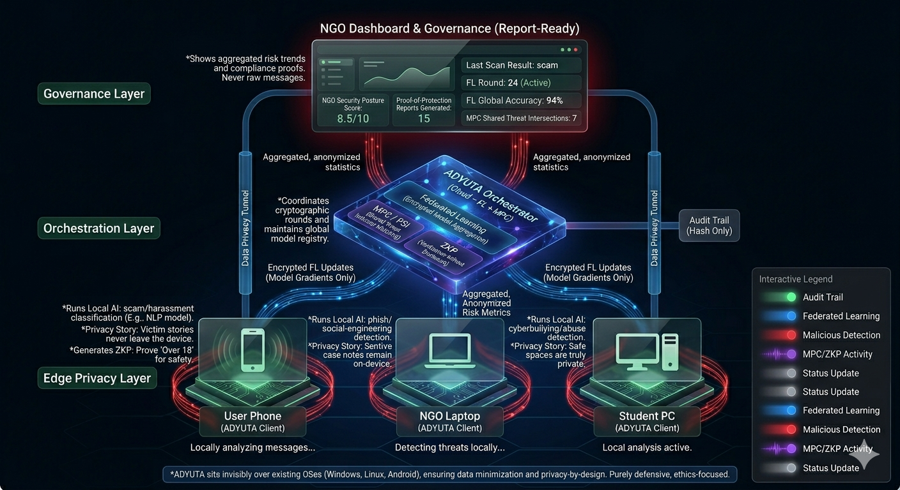

ADYUTA – Inner Working Architecture Blueprint
Automatically showing how each layer works and how data flows between them

Phase 0 – Initializing ADYUTA blueprint…
ADYUTA sits as an invisible security layer above existing operating systems, preparing all clients and cloud services.